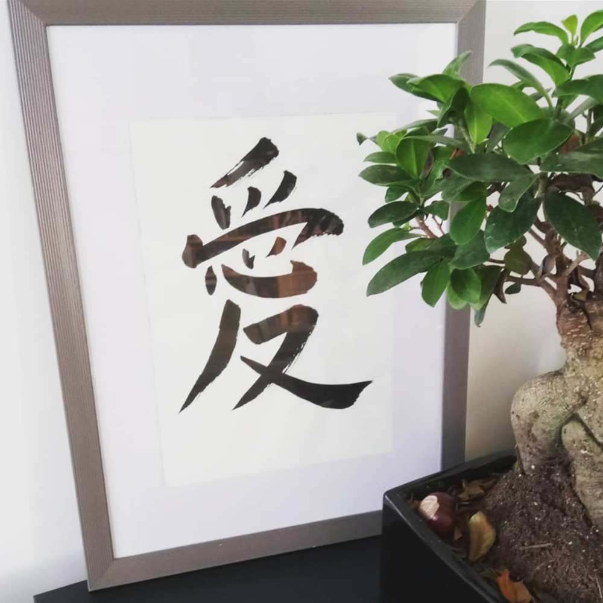
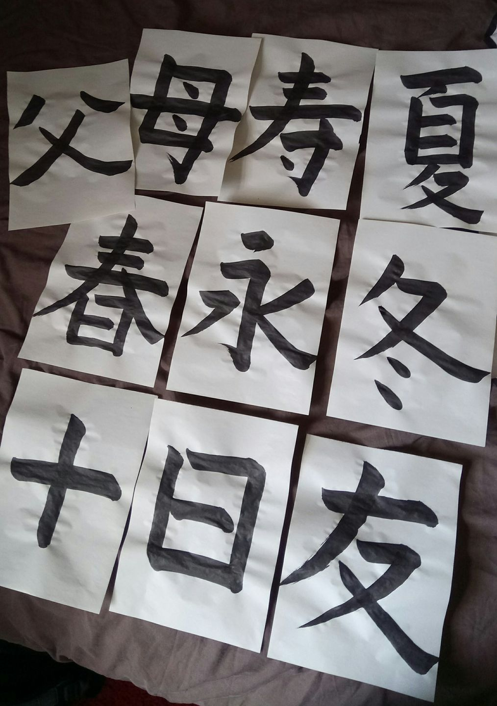
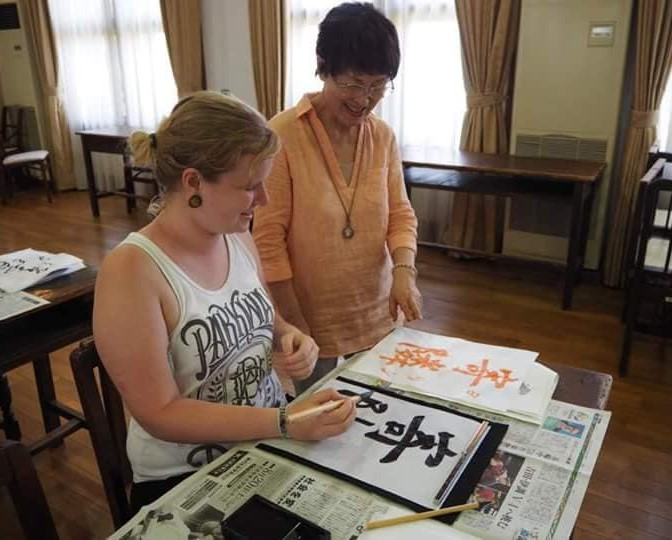

Kalligrafie
Binnen mijn opleiding Japanologie was het vak kalligrafie ongetwijfeld één van mijn favoriete vakken. Dit combineert namelijk mijn interesse in Oosterse talen met het creatievere. Ook in Japan heb ik lessen kalligrafie gevolgd tijdens een summerschool in Nara over de Japanse taal en cultuur.



Ga terug naar projecten